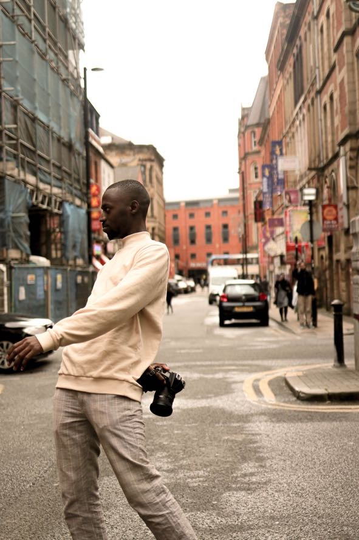
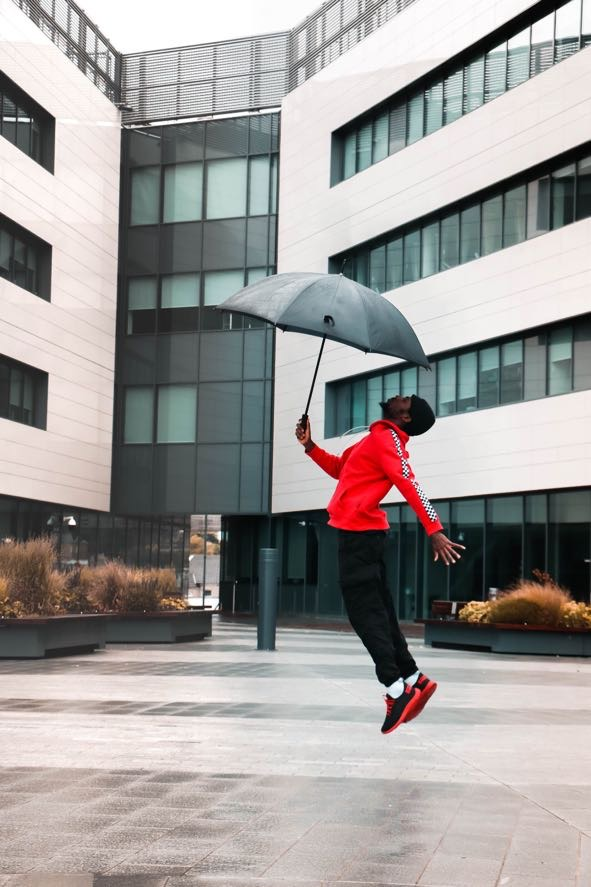

The name is Vale-ur Rush aka Vava Rush, a creative director and photographer. Encouraged by his African mother to do what he desired in life, he grew up living in different countries which inspired him, and was deeply fascinated by the different people he met. Vava loves what he does. Starting up with no formal training, he is a self taught creator and is now studying in higher education to broaden his skills.
